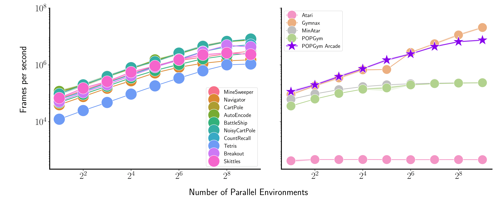
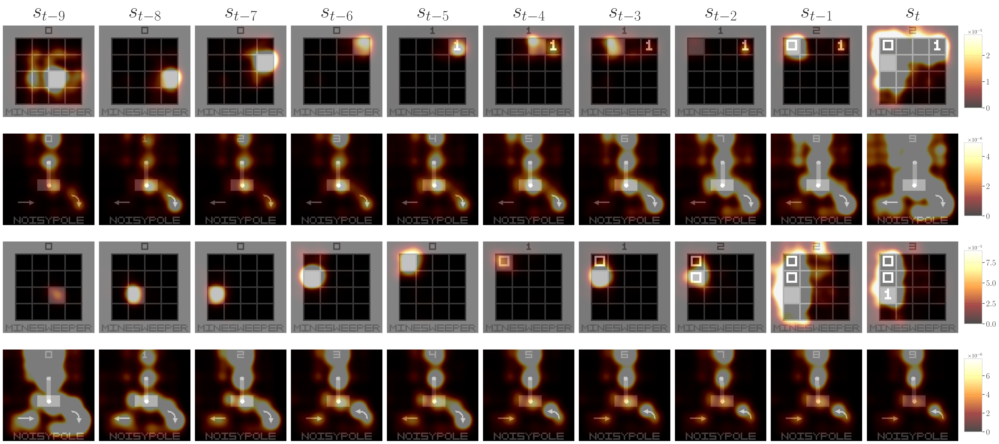
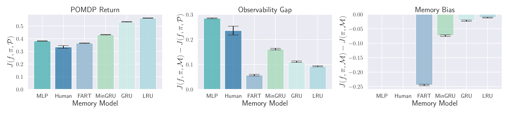

The Environment Twin Paradigm: We pair every fully observable MDP with a partially observable counterpart (POMDP) that shares the exact same action and observation space. This unified structure allows us to isolate observability as the sole independent variable, enabling precise counterfactual analysis and essentially asking: How much does memory truly matter?
Abstract
How should we analyze memory in deep RL? We introduce mathematical tools for fairly analyzing policies under partial observability and revealing how agents use memory to make decisions. To utilize these tools, we present POPGym Arcade, a collection of Atari-inspired, hardware-accelerated, pixel-based environments sharing a single observation and action space. Each environment provides fully and partially observable variants, enabling counterfactual studies on observability. We find that controlled studies are necessary for fair comparisons, and identify a pathology where value functions smear credit over irrelevant history. With this pathology, we demonstrate how out-of-distribution scenarios can contaminate memory, perturbing the policy far into the future, with implications for sim-to-real transfer and offline RL.
Throughput

High-Performance Training: We specifically designed these environments for speed. On a standard consumer GPU (RTX 4090), POPGym Arcade achieves throughputs exceeding 10 million frames per second, allowing most experiments to converge in under an hour. This efficiency democratizes memory research, enabling rapid iteration without massive compute resources.
Value Function Smearing

The "Smearing" Pathology: Here we visualize an unexpected failure mode in memory-based agents. We compute pixel-wise gradients to trace which parts of the history contribute to the agent's value estimate $V(s_t)$. In these tailored tasks, the optimal value should depend only on the immediate present, rendering the past irrelevant. Yet, as the visualization shows, both LRU and GRU models incorrectly "smear" credit across the entire history (highlighted regions). This indicates that the agents are memorizing noise rather than extracting state, a fragility that makes them highly susceptible to distributional shifts.
Return Disentanglement

Decomposing Performance: Using our proposed toolkit, we can dissect an agent's performance into distinct components: the raw POMDP return, the Observability Gap (how much performance is lost due to missing information), and Memory Bias. The plot above aggregates these metrics across all difficulty levels and environments, providing a holistic view of where current memory architectures fall short relative to the theoretical optimum.